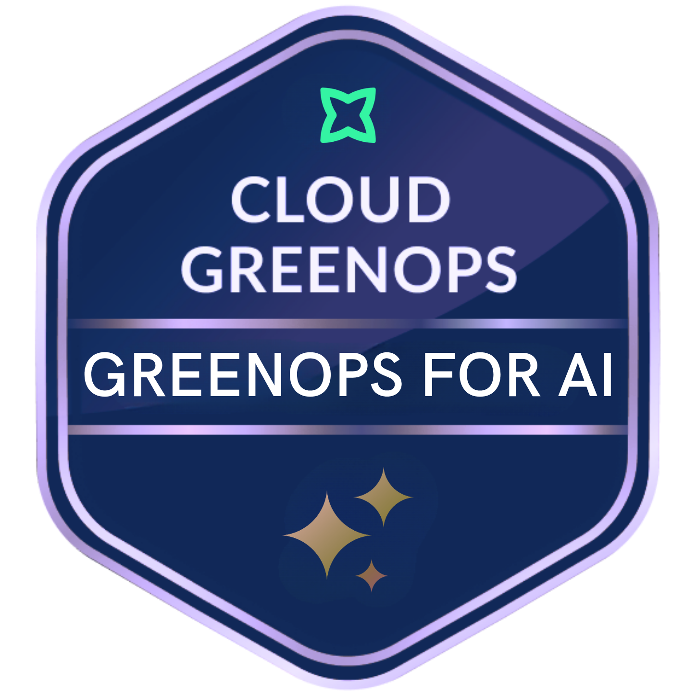

GreenOps for AI
Greenpixie
Training course
SustainabilityAI & machine learning
Overview
An intermediate, one-hour practical course on measuring and managing AI’s cloud impacts and applying GreenOps to reduce energy, carbon, water, and cost.
Syllabus & skills
- Identify AI emissions, inference impacts, and usage drivers
- Apply GreenOps principles to AI workloads and stakeholders
- Measure AI usage alongside cost and cloud spend
- Question AI use to find inefficiencies
- Apply caching, batching, model selection, and token optimization
- Engage teams to embed GreenOps in AI workflows
Issuer documentation
Cloud GreenOps: GreenOps for AI
Greenpixie
See Source